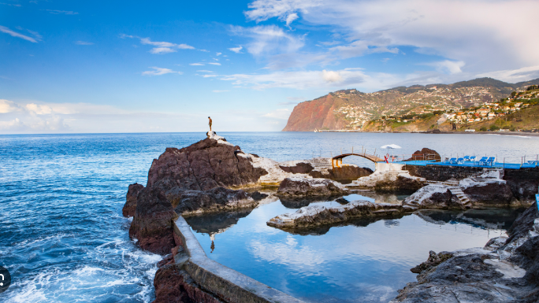

✨ Piscinas naturales Doca Do Cavadas ✨
Viaje a Madeira 🚀

Características:
Está formada por piedras volcánicas
Es un sitio muy tranquilo para descansar
Tiene una zona de saltos al mar
Hay un tunel que te lleva a la playa